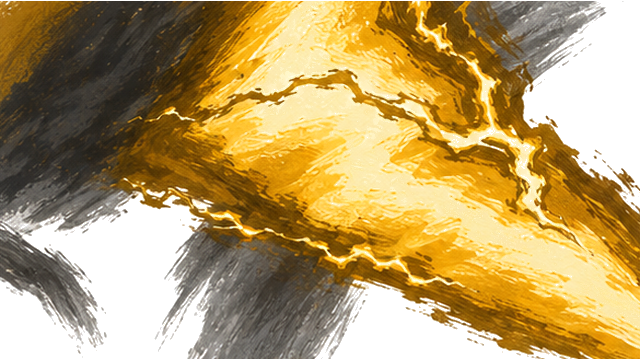
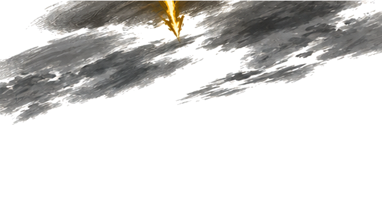
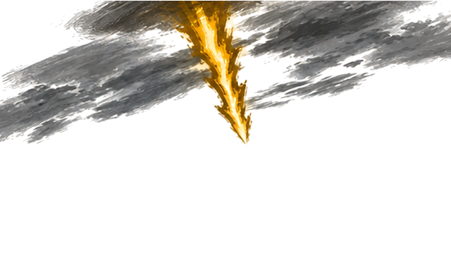
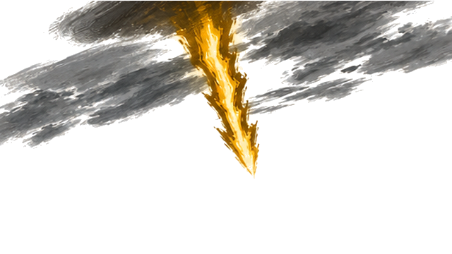
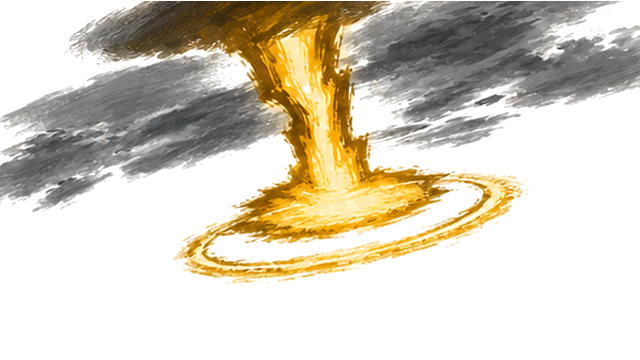
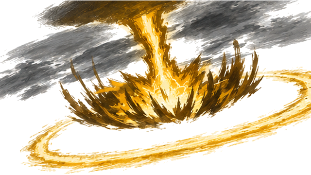
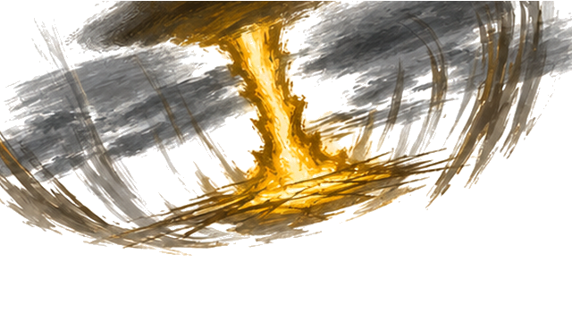

K41 · 原201 · Alpha层级 231

K41 · 原201 · Alpha层级 231

K42 · 原209 · Alpha层级 204

K43 · 原218 · Alpha层级 238

K44 · 原220 · Alpha层级 233

K45 · 原222 · Alpha层级 236

K46 · 原223 · Alpha层级 233

K47 · 原225 · Alpha层级 240

K48 · 原231 · Alpha层级 236